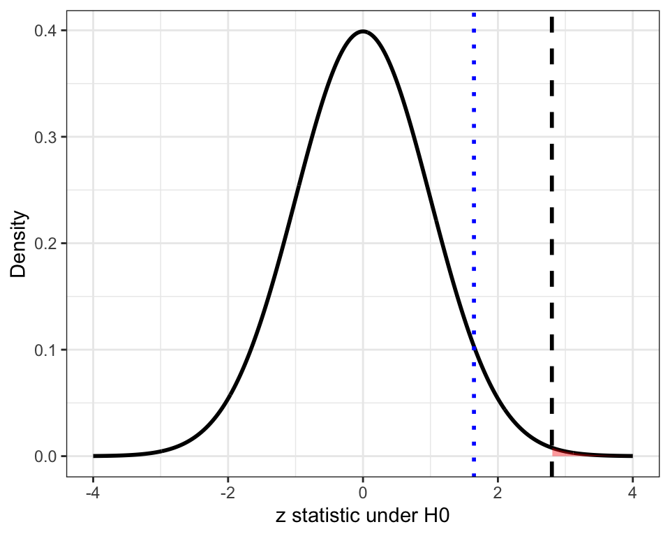
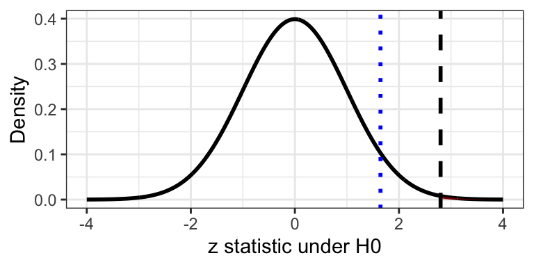

# A tibble: 6 × 2
patient_id response
<int> <int>
1 1 1
2 2 1
3 3 0
4 4 0
5 5 1
6 6 1As a review:
descriptive statistics summarize observed data through quantities such as sample means, proportions, and measures of variabilityprobability models characterize the behavior of data under specified assumptions about the population or data-generating processsampling distributions provide the theoretical basis for understanding variability in sample-based estimates across repeated studiesAs a review:
estimation procedures yield point estimates and corresponding standard errors for population parametersconfidence intervals quantify statistical uncertainty and define ranges of parameter values supported by the observed datahypothesis testing uses these components to formally evaluate whether the observed data are compatible with a null hypothesis regarding a population parameterApproaches allow researchers to determine whether an observed treatment effect, biomarker association, or group difference is larger than would reasonably be expected from random sampling variability alone under a null hypothesis of no effect or no association
hypothesis tests provide a way to compare observations with what would be expected under a null assumption
Analysts are often asked to evaluate whether a signal is statistically meaningful
Examples include:
hypothesis test is defined as:
a method that uses sample data to decide between two competing claims [hypotheses] about a population characteristic
Where:
The null hypothesis represents the default population claim and the alternative hypothesis represents the competing scientific claim evaluated using the data
Null hypothesis \(H_0\)
Alternative hypothesis \(H_A\)
Statement of the Problem
Analysis
Conclusion
Hypothesis testing evaluates whether observed sample evidence supports or contradicts a proposed explanation about a population
Primary question:
Is the probability of tumor response to therapy higher among patients with a targeted biomarker than among patients without the biomarker?
Step 1: Describe the population characteristic
population characteristic: unknown population-level quantity the hypothesis test is designed to evaluate
Example:
\[ p=\text{population probability of tumor reduction} \]
Step 2: State the null hypothesis \(H_0\)
null hypothesis \(H_0\): claim about a population characteristic that is initially assumed to be true
\[ H_0 : p = 0.5 \]
Step 3: State the alternative hypothesis \(H_A\)
alternative hypothesis \(H_A\): competing claim suggesting the population characteristic differs from the null hypothesis
different forms of the alternative hypothesis reflect different scientific questions about the population parameter and determine whether statistical evidence is evaluated in one direction or in both directions relative to the null hypothesis value
Two-Sided Alternative Hypothesis
\[ H_A:p \neq 0.50 \]
Asks: Is the population response probability different from 50%?
asks whether the true response probability is different from 50% in either direction
both higher and lower response probabilities count as evidence against H_0
One-Sided Alternative Hypothesis
\[ H_A:p>0.50 \]
Asks: Does the biomarker improve response probability?
asks whether the response probability is greater than 50%
only increases count as evidence against \(H_0\)
Essentially: if the observed response probability were actually lower than 50% this would not support this alternative hypothesis
4. Select Significance Level \(\alpha\)
significance level \(alpha\) : probability threshold used to define evidence strong enough to reject the null hypothesis
Hypothesis testing decisions can produce two major categories of statistical error:
Type I Error: error of rejecting \(H_0\) when \(H_0\) is true [\(\leftarrow\) significance levels controls this error probability]
e.x.: concluding that a biomarker is associated with response when it is not
Type II Error: failing to reject the null hypothesis [\(H_0\)] when the null hypothesis [\(H_0\)] is actually false
e.x.: failing to detect a biologically meaningful signal
Choosing \(\alpha\) reflects how much risk of a Type I error is acceptable given the scientific question
Common thresholds for \(\alpha\):
If \(\alpha = 0.05\):
If \(\alpha = 0.01\):
5. Display test statistic that will be used in analysis
test statistic : numerical quantity calculated from sample data used to decide whether to reject or fail to reject \(H_0\)
Since the characteristic of interest is a population proportion:
\[ p = \text{population probability of tumor response} \]
Many hypothesis tests use a statistic with this structure:
\[ \text{test statistic} = \frac{\text{estimate} - \text{null value}}{\text{standard error}} \]
Where:
Choice of test statistic depends on:
Examples include:
| Test statistic | Use Description |
|---|---|
| z statistic | population proportions and some large-sample mean tests |
| t statistic | population means with estimated variability |
| chi-square statistic \(\chi^2\) | categorical data and contingency tables |
| F statistic | comparing variability across groups in ANOVA |
5. Display test statistic that will be used in analysis
\[ z = \frac{\text{estimate [observed value] - expected [null]}}{\text{standard error}} = \frac{ \hat{p} - p_0 }{ \sqrt{ \frac{ p_0(1-p_0) }{n} } } \]
Where:
5. Display test statistic that will be used in analysis
Hypothesis:
determine whether the population tumor response probability is greater than 50%
As a result:
Interpretation:
Suppose you have a dataset of 120 cancer patients
The variable response is binary:
1 = tumor response observed
0 = tumor response not observed
Observed response proportion \(\hat{p}\) estimates the population response probability p
\(\hat{p}\): observed sample proportion [averge across all responses in dataset]
\(p_0\): null hypothesis proportion [p = 50%]
# A tibble: 6 × 2
patient_id response
<int> <int>
1 1 1
2 2 1
3 3 0
4 4 0
5 5 1
6 6 1p0 <- 0.50
summary_df <- tumor_response_df |>
summarise(
n = n(),
p_hat = mean(response)
) |>
mutate(
se_null = sqrt(p0 * (1 - p0) / n),
z = (p_hat - p0) / se_null,
p_value = 1 - pnorm(z)
)
summary_df# A tibble: 1 × 5
n p_hat se_null z p_value
<int> <dbl> <dbl> <dbl> <dbl>
1 120 0.55 0.0456 1.10 0.137Code Explanation
p0 <- 0.50 \(\rightarrow\) define the null hypothesis response probability: \(H_0:p=0.50\)
find total number of patients (n) and observed sample response proportion (p_hat)
summarise( n = n(), p_hat = mean(response) )
compute standard error expected under the null hypothesis
se_null = sqrt(p0 * (1 - p0) / n)
compute one-sample z statistic
z = (p_hat - p0) / se_null
compute right-tailed p-value from the standard normal distribution \(H_A:p>0.50\)
p_value = 1 - pnorm(z)
p0 <- 0.50
summary_df <- tumor_response_df |>
summarise(
n = n(),
p_hat = mean(response)
) |>
mutate(
se_null = sqrt(p0 * (1 - p0) / n),
z = (p_hat - p0) / se_null,
p_value = 1 - pnorm(z)
)
summary_df# A tibble: 1 × 5
n p_hat se_null z p_value
<int> <dbl> <dbl> <dbl> <dbl>
1 120 0.55 0.0456 1.10 0.137Interpretation
Step 6. Check model assumptions
one-sample z test depends on the following assumptions:
Steps 7: Calculate test statistic and relevant values
Task: Collect a new sample [n=100] and address the following:
If the true population tumor response probability is 0.50, how likely would it be to observe a sample response proportion at least as large as the one observed?
Null hypothesis:
\[ H_0: p = 0.50 \]
Alternative hypothesis:
\[ H_A: p > 0.50 \]
Steps 7: Calculate test statistic and relevant values
Suppose:
\(\alpha\): 0.05
\(\hat{p}\) = 0.64 [\(\leftarrow\) value collected from a previous study ]
\(p_0\) = 0.5
n = 100
Calculate standard error:
measure of how much the sample proportion would typically vary across repeated random samples when \(p_0=0.50\)
Steps 7: Calculate test statistic and relevant values
Calculate z statistic:
\[ z=\frac{0.64-0.5}{\sqrt{\frac{0.5(1-0.5)}{100}}} \]
Z-score = 2.8Next step: find p-value associated with test statistic
Steps 8: Determine p-value associated with test statistic
p-value is:
In research example:
\[ p = \text{population probability of tumor response among cancer patients} \]

Interpretation
bell-shaped curve represents the null distribution of the z statistic assuming: \(H_0: p = 0.50\)
Interpretation of regions:

Plot Interpretation
Blue Line: critical value for \(\alpha=0.05\) [qnorm(0.95) = 1.645]
1 - pnorm(2.8) = 0.0026Step 9: state conclusion
Notes on comparing the observed p-value and pre-selected significance level: \(\alpha\)
p-value decision rule:
Interpretation:
Note: failing to reject \(H_0\) does NOT prove the null hypothesis is true, instead, it means the sample does not provide sufficiently strong evidence against it
Consider:
Step 9: state conclusion
Scientific interpretation includes:
Interpretation:
evidence suggests that the targeted biomarker may be associated with increased tumor response probability in the population
among \(n = 100\) cancer patients, the observed tumor response proportion was substantially larger than what would typically be expected if the true population response probability were 50%
observed z statistic is \(z \approx 2.8\) indicating that the sample response proportion was approximately 2.8 standard errors above the null response probability
p-value \(p \approx 0.0026\) : result this extreme would be very unlikely under the null hypothesis
hypothesis test : an approach for evaluating whether observed sample data are consistent with a proposed population claim
hypothesis test can be used to help determine whether the observed data are sufficiently inconsistent with the null hypothesis to support an alternative scientific explanation
hypothesis testing is built on estimation and sampling variability
test statistic quantifies evidence relative to the null hypothesis
p-value measures inconsistency with the null model
conclusions are interpreted in scientific context